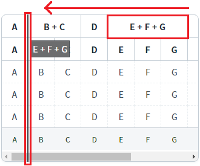
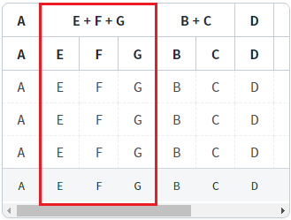
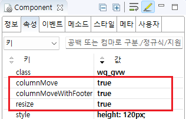

GridView의 헤더 컬럼을 마우스로 드래그-앤-드롭하여 열의 위치를 변경할 수 있도록 설정한 예제입니다.
컬럼 이동 기능 설정
컬럼 이동 기능 미설정(기본)
예제 영역 '컬럼 이동 기능 설정'에 구성된 GridView에서 테스트합니다.1
STEP 1: GridView의 헤더 컬럼을 이동 시킬 컬럼 앞으로 '드래그 앤 드롭'합니다.
헤더 컬럼 [E + F + G]를 헤더 컬럼 [B + C] 앞쪽까지 '드래그 앤 드롭'합니다. (컬럼간의 선 영역은 컬럼의 너비 조절 기능이 동작되므로 컬럼의 중앙을 선택하여 조작합니다.)
Image 1.브라우저(Chrome) 실행 예시

2
STEP 2: 실행 결과를 확인합니다.
컬럼의 위치가 이동한 것을 확인합니다.
Image 2.브라우저(Chrome) 실행 예시

1
STEP 1: GridView의 속성을 정의합니다.
[필수] resize="true"
[default:true, false] 컬럼 드래깅을 통한 컬럼 폭 조절 허용.
[필수] columnMove="true"
[default:false, true] 헤더 드래깅을 통한 컬럼 이동을 허용.
[선택] columnMoveWithFooter="true"
[default: false, true] 컬럼 이동 시 푸터를 함께 이동. footer가 있는 경우 선택적으로 지정합니다.
Image 3.웹스퀘어 스튜디오의 Component View - 속성 설정 예시

Example 1.Source
<!-- gridView 의 소스 본문 예시 --> <w2:gridView resize="true" columnMove="true" columnMoveWithFooter="true" dataList="data:dlt_exam1"> <!-- 중략 --> </w2:gridView>
resize
columnMove
columnMoveWithFooter